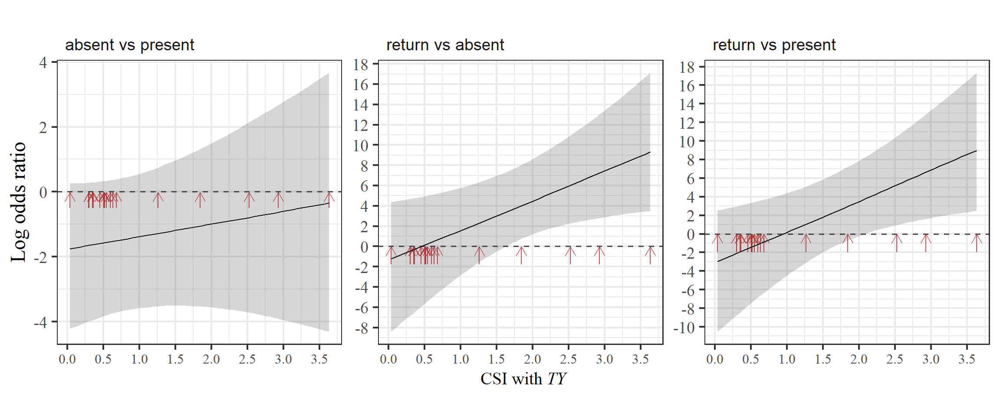
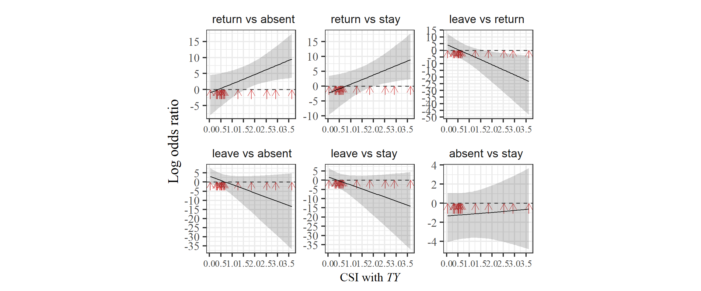

14 オスの攻撃と怪我の関連
本章では、オスから受けた攻撃の頻度と怪我の有無の関連について検討する。
14.1 データの加工
まず怪我のデータを読み込み、その他のデータと結合する。
## 怪我データの読み込み
injury18 <- read_excel("../Data/data/2018mating/2018mating_raw.xlsx", sheet = "injury")
injury19 <- read_excel("../Data/data/2019mating/2019mating_raw.xlsx", sheet = "injury")
injury20 <- read_excel("../Data/data/2020mating/2020mating_raw.xlsx",sheet = "injury")
injury21 <- read_excel("../Data/data/2021mating/2021mating_raw.xlsx",sheet = "injury")
injury_all <- bind_rows(injury18,injury19,injury20,injury21) %>%
pivot_longer(Kur:Har, names_to = "femaleID", values_to = "injury") %>%
mutate(injury01 = ifelse(injury >= 1, 1, 0)) %>%
mutate(date = as_date(date))
## データを結合
injury_final <- agg_rate_each %>%
filter(presence == "1") %>%
filter(age >= 6) %>%
left_join(injury_all, by = c("date", "femaleID")) %>%
left_join(female_all %>% select(date, femaleID, rs2),
by = c("date", "femaleID")) %>%
drop_na(injury01, rs2) %>%
mutate(rate_agg_std = standardize(rate_agg))14.2 分析
14.2.1 モデリング
それでは、モデリングを行う。モデルの詳細は以下のとおりである。
事前分布には弱情報事前分布を用いた。
- 分布: ベルヌーイ分布
- リンク関数: ロジット関数
- 応答変数: 怪我が確認されたか否か(
injury01)
- 説明変数: オスからの攻撃頻度(
rate_agg)、メスの発情の有無(rs2)、調査期間(study_period)
- ランダム切片: メスID(
femaleID)
m_agginj <- brm(injury01 ~ rate_agg_std*rs2 + study_period + (1|femaleID),
family = bernoulli,
iter = 11000, warmup = 6000, seed = 13,
prior = c(prior(student_t(4,0,10), class = "b"),
prior(student_t(4,0,10), class = "Intercept"),
prior(student_t(4,0,5), class = "sd")),
control=list(adapt_delta = 0.9999, max_treedepth = 20),
backend = "cmdstanr",
data = injury_final,
file = "model/m_agginj.rds")14.2.2 モデルチェック
DHARMaパッケージ(Hartig, 2022)とDHARMa.helperパッケージ(Rodríguez-Sánchez, 2023)でモデルの前提が満たされているかを確認する。特に問題はないよう。

bayesplotパッケージ(Gabry & Mahr, 2022)のpp_check関数で、事後分布からの予測分布と実測値の分布を比較しても大きな乖離はない?

多重共線性のチェックもお個あったが、VIFに問題はない。
Rhatにも問題はなく、収束の問題はないよう。
## 全個体への攻撃
data.frame(Rhat = brms::rhat(m_agginj)) %>%
ggplot(aes(x = Rhat))+
geom_histogram(fill = "white",
color = "black")+
theme_bw()+
theme(aspect.ratio = 1) -> p_rhat_agginj
p_rhat_agginj
14.2.3 結果の確認
結果は以下の通り。太字になっている変数は95%確信区間が0をまたいでおらず、有意な影響があるといえる。
Explanatory variables | Median | 95%CI | Rhat | ESS |
|---|---|---|---|---|
切片 | -3.12 | [-3.55,-2.72] | 1.00 | 9,232.10 |
被攻撃頻度 | 0.31 | [0.10,0.50] | 1.00 | 13,090.27 |
発情の有無(vs 無) | 1.26 | [0.91,1.60] | 1.00 | 19,855.67 |
被攻撃頻度× | -0.10 | [-0.32,0.13] | 1.00 | 12,949.76 |
調査期間 | 0.12 | [-0.32,0.55] | 1.00 | 15,885.44 |
調査期間 | -0.47 | [-0.95,0.00] | 1.00 | 17,082.59 |
調査期間 | -0.13 | [-0.51,0.25] | 1.00 | 15,535.94 |
交互作用項について検討する。非発情メス、発情メスのいずれについても被攻撃頻度は怪我をする確率と関連しているよう。
14.2.4 結果の図示
nd_agginj <- tidyr::crossing(rate_agg = seq(0, 2, length.out =100),
study_period = c("m18","m19","m20","m21"),
rs2 = c(0,1)) %>%
mutate(rate_agg_std = (rate_agg - mean(injury_final$rate_agg))/sd(injury_final$rate_agg))
fit_agginj <- fitted(m_agginj,
newdata = nd_agginj,
re_formula = NA) %>%
data.frame() %>%
bind_cols(nd_agginj)
injury_final %>%
ggplot(aes(x = rate_agg, y = injury01, color = study_period))+
geom_point(shape = "|", size = 3)+
geom_line(data = fit_agginj,
aes(y = Estimate, linetype = as.factor(rs2)),
linewidth = 0.7)+
theme_bw(base_size = 14)+
scale_y_continuous(breaks = seq(0,1,by = 0.2)) +
labs(x = "オスからの攻撃頻度", y = "新\nた\nに\n怪\n我\nを\nす\nる\n確\n率",
color = "調査期間", linetype = "発情の有無") +
scale_color_nejm()+
theme(axis.title.y = element_text(angle = 0,
vjust = 0.5,
family = "Yu Gothic"),
axis.title.x = element_text(family = "Yu Gorhic"),
axis.text = element_text(family = "Arial",
size = 13),
legend.title = element_text(family = "Yu Gothic"),
aspect.ratio = 1) -> p_agginj_all
p_agginj_all